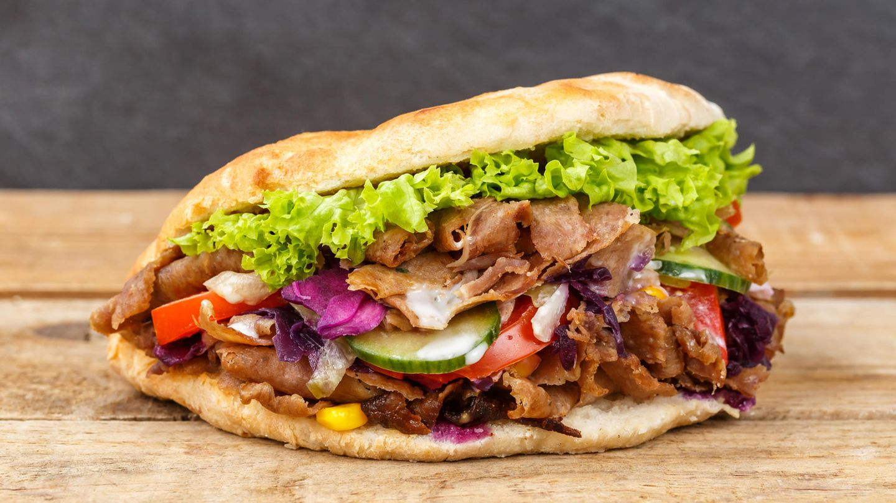

Döner Recipe

Description
A Döner is a Turkish dish made of seasoned meat cooked on a vertical rotisserie and served in flatbread.
It's typically topped with vegetables and sauces like yogurt or chili.
Ingredients
- Meat
- Flatbread
- Lettuce
- Tomateos
- Yogurt or Cocktail Sauce
Steps
- Season thinly sliced meat with spices like paprika, cumin, garlic, and salt, and let it marinate for at least an hour.
- Cook the marinated meat on a vertical rotisserie until it is tender and crispy on the edges.
- Place the cooked meat in a flatbread, add fresh vegetables (e.g. lettuce, tomatoes), and drizzle with yogurt or cocktial sauce.